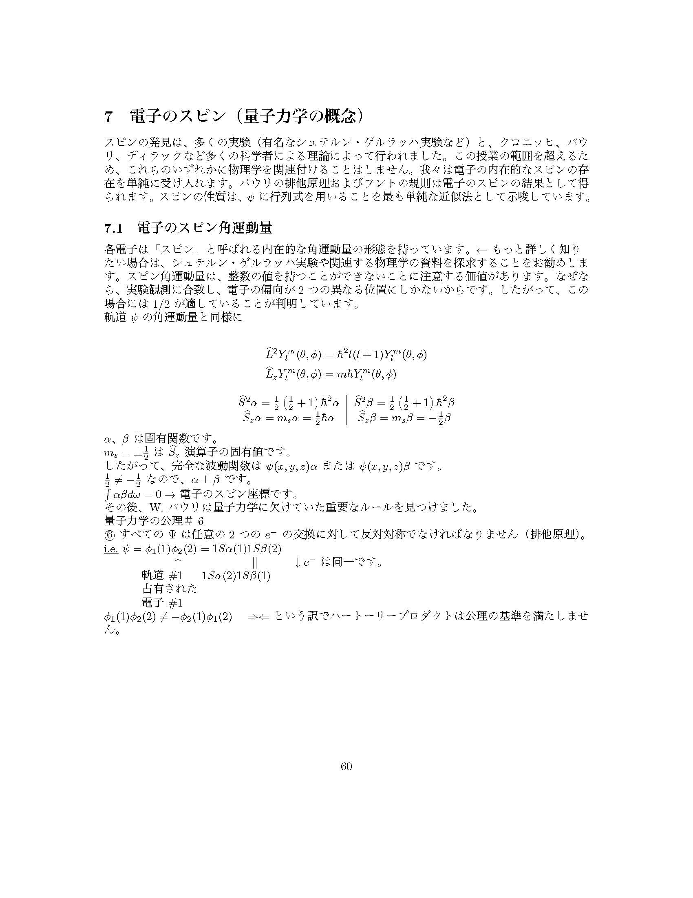

クリックするとpdfが開きます。僕の授業では１週間でおよそ一章をカバーします。通常の教科書は高いので僕は使っていません。全てLaTexで書かれた講義ノートをChatGPTで和訳したもです。生徒目線では色々詳細が抜けているかもしれませんがそこは授業で説明します。その間、生徒は各章ごとのプリントを渡しているので各々自分が必要な所を上書きしていくといった授業スタイルです。英文ソースはGithubを見てください。公開する予定はありませんがテストや演習など興味があれば連絡してください。教員の方でDMして貰えれば全て渡します。
-
序章
前書きです。過去5年ほど実際に僕が教えているクラスで使用していますが毎年少しずつ更新しています。一応教科書にもなる程度の内容はカバーしていると思います。AIを使った和訳なので間違いや指摘があれば連絡してください。 一応アメリカのGREで物理化学の問題に絞ればほぼ満点が来る程度の内容はカバーしてあると思います。
-

第一章
実際これで十分とは思いませんがこれだけ知っていれば結構な専門書が読めると思います。あくまでも物理化学なので数学の教科書のように厳密に書いていくスタイルは避けてある程度イメージや感覚的な事を重視して書きました。基本的に行列、ベクトル空間、フーリエ変換、線形変換、線形演算子、確率常微分方程式などが書かれています。
-

第2章
歴史的な発見、特にプランクの黒体放射に関する研究、アインスタインの光電効果に関する研究、ボーアの水素モデル、ハイゼンバーグの不確定原理などが書かれています。不確定原理についての詳しい証明（フーリエ変換版)は付録を見てください。
-

第3章
波動方程式からシュレディンガー方程式の導入、そして量子力学の公理を紹介しました。公理に含まれているエルミート演算子についての演習、固有値や固有ベクトルに関して正規、直交を理解、そして可換性を使ったもう一つの不確定原理の証明などが付録を通して触れられています。最後に時間依存量子力学について僅かですが触れました。
-
第4章
量子力学の導入としてよく使われる「箱の中の粒子」問題、単体調和振動子、重心と帰納質量による２体から１体問題への変換、モースポテンシャル、L-Jポテンシャル、１体剛体回転とその拡張が書かれています。これらの問題は原子の動きに関連しており後期の統計熱力学に使われます。
-
第5章
この章では電子が1個、原子核も1個の系を考えます。前章で導いた解などを再利用しながらこの系の全ての電子軌道を導入します。電子ー原子核のポテンシャルの中で球体座標を使い、シュレディンガー方程式の解を導入します。球面調和関数、動径波動関数、関連ラゲール多項式等がMathematicaを使って可視化します。そして量子数同士の関連性など一般科学で触れなかった事に次いで議論します。そして原子単位を使ってシュレディンガー方程式をより単純な無次元方程式に変換します。
-
第6章
この章では変分原理を用いてよく使われる近似法について学習します。
-

第7章
この章では排他原理とフントの原理について学びます。
-
第8章
この章では原子の項記号について学びます。そして可能な項記号の中から一番エネルギー値の低い項記号を選ぶ訓練をします。
-
付録
ほぼ数式なので残りの僅かな説明は日本語訳はしていません。２通りの不確定原理の証明、位相空間において占有される単一の状態の平均体積の準古典的観点,オイラーの公式、ラグランジュ乗数と化学ポテンシャル等が証明又は導入されっています。これらに関する計算ラボの資料はのちに公開します。後、熱力学や統計力学は春学期に公開する予定です。ここに書かれている内容は別にカバーしなくてはいけないというものではありませんが僕は個人的に好きなので毎回全てカバーします。